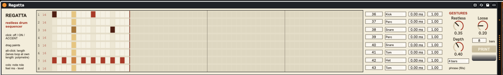
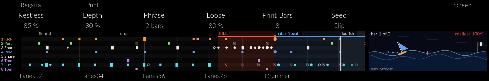

24
regatta
A drum sequencer where the grid is a seed, not the score — a restless Copeland-style drummer performs your beat in an endless, never-repeating MIDI stream.


about
You program a small base beat; Regatta plays it the way a restless, easily-bored drummer would. A gesture engine — coherent musical units, never per-step dice — adds ghosts, drags, doublings, drops and hat flourishes, all role-aware and anchored to your seed; fills build into phrase ends and land on the one; the pattern itself modulates for a phrase or two (hats go offbeat or onto the ride, accents migrate, kicks push late) before coming home; lanes occasionally slip off-grid and get pulled back in; and a slow ~30-bar contour breathes the whole performance between near-straight and busy. Sits before a Drum Rack, generates for ever, and PRINT nets the last N bars — exactly as played — into a Session clip. Since v1.2 the seed can also come from a MIDI clip on the same track, so Regatta can be programmed and played entirely from Push 3, standalone included.
- type
- midi effect
- built by
- claude
- state
- v1.2c
- version
- 1.2c
- push screen
- Live 13 / Max 9.2
- folder
- Regatta Device
quick start
- 01Drop
Regatta.amxdon a MIDI track before a Drum Rack. Regatta only sends MIDI, so it needs an instrument after it to make any sound. - 02Seed (Drummer bank, encoder 6) starts on Clip. Make a MIDI clip on the same track, step-sequence a beat in it on Push, and launch it.
- 03Regatta takes the pads your clip uses as its lanes, sets each lane's Note and guesses its Role, then plays the beat with the drummer's feel. Your clip's own notes are not doubled.
- 04Raise Restless and Depth until the drummer feels right. Add Loose for human timing.
- 05Rather draw on the face? Set Seed to Grid: click cells (off → ON → ACCENT), drag to paint, alt-click sets a lane's length (lanes loop at their own length, so polymetre is free). A starter kick/snare/hat beat ships in.
- 06Heard a keeper? PRINT drops the last N bars into this track's first empty Session slot, unquantised, as played.
controls
per lane (grid rows 1-8)
- Note0 - 127
- MIDI note the lane fires; defaults 36-43, the Drum Rack's bottom two rows. In Clip mode it is set for you from the pads the clip uses.
- RoleKick / Snare / Hat / Ride / Tom / Perc
- What kind of drum this lane is. Steers every gesture, fill and modulation — set it honestly. In Clip mode it is guessed from the General MIDI drum map (36 kick, 38 snare, 42 hat ...) whenever a lane gets a new pad; change it if your kit differs.
- Feel-100 - +100 ms
- Push/drag against the grid: negative plays ahead (eager hats), positive behind (lazy backbeat).
- Level0 - 1
- Velocity trim. 0 is silent (since v1.2c; earlier versions floored velocity at 1).
seed
- SeedGrid / Clip
- Where the beat comes from. Clip (the default): the MIDI clip playing on this track. Its pads become lanes 1-8, lowest note first; velocity 101 and up is an ACCENT; the clip's loop length sets every lane's length (up to 4 bars); muted notes are ignored. The face grid mirrors the clip and can't be clicked. Stop or delete the clip and Regatta goes quiet. Grid: the face grid, as in v1.1. Switching back to Grid keeps the clip's beat as a starting point.
gestures
- Restless0 - 1
- How often the drummer intervenes. 0 = plays the seed dead straight; past ~0.55 a second ornament stream opens; 1 is properly busy.
- Depth0 - 1
- How far interventions go: ghosts and doublings at low settings, then drags and drops, then flourishes with 64th flavours. Also scales gesture velocities and fill length.
- PhraseOff / 2 / 4 / 8 / 16 bars
- Where fills land. Off = no fills at all; phrase weighting and pattern modulation carry on regardless.
- Loose0 - 1
- Timing master: human jitter on every hit (±6 ms at full, one sample per lane-step so a hand moves as a unit) and the licence for phase excursions. 0 = machine-tight.
- Print Bars + PRINT1 - 32
- Captures the last N complete bars of the performance into a fresh Session clip on this track (new scene if the column's full). Refuses politely when stopped.
push 3
encoders read left to right. slots marked “–” are intentionally empty.
lanes never straddle banks — two lanes per bank, in order, through Lanes34, Lanes56 and Lanes78
Print is momentary — fires a print and resets itself Screen is the last button above the display (slot 8) in every bank: it switches between the device's own picture and Push's normal view.
workflow
programming it on push 3
Put Regatta and a Drum Rack on a track, leave Seed on Clip, and step-sequence a simple beat into a clip with Push's sequencer. Launch it: Regatta plays it with the drummer on top. Edits to the clip are picked up as it plays, so you can build the beat while listening. Use the lane banks to adjust each Role, Feel and Level, and the Drummer bank for Restless, Depth, Phrase and Loose. This works the same standalone and on the Mac.
the long take
Restless ~0.4, Depth ~0.5, Loose ~0.3, Phrase 4 bars — then record 8+ minutes into Arrangement, or just play. The contour gives near-straight stretches and busy patches on its own; harvest the best bars with PRINT afterwards.
the drummer, not the machine
Keep the seed simple — kick, backbeat, 8th hats. The interest comes from what Regatta does to it, and simple seeds give the gestures the most room to read the beat.
printing keepers
Leave it running while you work on other tracks. When a fill or a modulated stretch grabs you, PRINT 8 bars, mute the device and keep the clip — it is exactly what you heard, off-grid timing included. Live's Capture MIDI works too.
gotchas
- In Clip mode Regatta follows only the clip that is playing. If nothing sounds, check the clip is running; stopping or deleting it silences Regatta on purpose.
- Clip mode uses the clip's first eight pads (lowest first). A ninth pad passes through untouched, played straight by the Drum Rack.
- In Clip mode, notes on the lane pads are held back (Regatta plays them) and other notes pass through, but the clip's CC, pitch bend and pressure are dropped. Switch to Grid if you need those.
- Restless 0 really is off: no gestures, fills, modulations or excursions. If the device seems inert, look there first.
- PRINT needs the transport running and at least one complete bar played; it prints complete bars only.
- Mute the device (or the clip) after printing if both would play — otherwise everything doubles.
- The drop gate means a hat lane can go quiet during fills and thin-8s episodes by design — that's the drummer making room, not a bug.
- MIDI timing is vector-quantised like every M4L MIDI device (~1.5 ms at a 64-sample buffer).
push 3 screen
what it shows
A scrolling score of what the drummer actually played against your seed: seed hits, extra ghosts and flourishes, drops (crossed boxes), fills and pattern changes bracketed and named along the top, and lanes slipping off the grid. On the right, a small sailing race over the phrase: the boat reaches the flag where the fill lands, and the waves rise with Restless.
the screen button
Screen is the last button above the display, in every bank. It switches between this picture and Push's normal view. Push still draws the encoder names and values on top of the picture, so turning an encoder works exactly as before.
what it needs
Live 13 with Max 9.2 or later, and Push 3, tethered or standalone. Custom Push graphics are a Live 13 beta feature, so Ableton may still change how they work. The picture is drawn only while this device is the one showing on Push.
confirmed on push
Simon has run Regatta's screen on Push 3 (23 Nov 2026).
rebuilding
python3 build_regatta_v12.py builds the current version (v1.2c): the clip seed and the Push screen, frozen with five js files (grid, brain, clip reader regatta_clipseed.js, print, screen). node test_clipseed_node.js tests the clip reader against a stubbed Live API; node tests/preview_screen.js renders the screen offline. v1.0, v1.1 and v1.2 are kept beside it. The older build scripts beside it rebuild earlier versions and overwrite Regatta.amxd, so run this one last.
python3 build_regatta.py in Regatta Device/ regenerates the .amxd (with full wiring validation) — frozen at build, all three js files embedded and byte-verified, so there is no Max freeze step. Offline suites: sim_engine.py, sim_sched.py (clock + scheduler maths) and test_grid_node.js, test_brain_node.js, test_print_node.js (the REAL js under node, LiveAPI stubbed).
All taste numbers — gesture rates, fill shapes, episode probabilities — live in regatta_brain.js.